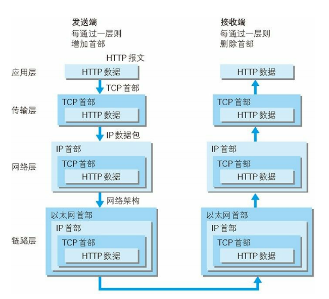
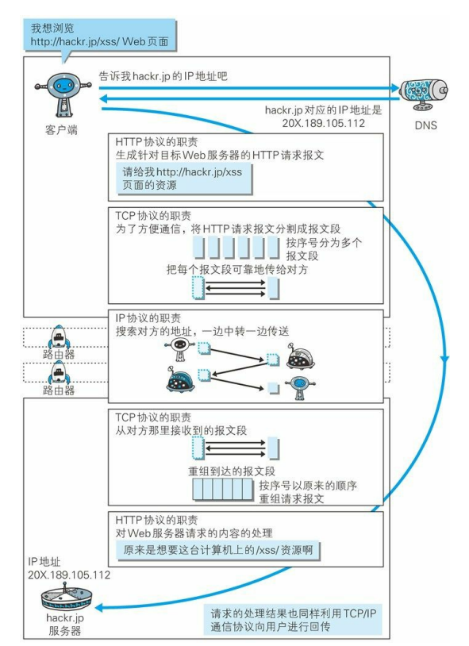

Http请求的过程与原理

首先作为发送端的客户端在应用层（HTTP协议）发出一个想看某个web也页面的HTTP请求。
接着，为了传输方便，在传输层（TCP协议）把从应用层处收到的数据（HTTP请求报文）进行分割，
并在各个报文上打上标记序号及端口号后转发给网络层。
在网络层（IP协议），增加作为通信目的地的MAC地址后转发给链路层。这样一来，发往网络的通信
请求就准备齐全了。
接收端的服务器在链路层接收到数据，按序往上层发送，一直到应用层。当传输层到应用层才能算真
正接收到由客户端发送来的HTTP请求。注：
1. IP协议----负责传输
2.TCP协议 ---- 确保可靠性（三次握手，四次挥手）
3.DNS服务 ---- 负责域名解析
4.各种协议与HTTP协议之间的关系

========================================================================
TCP/IP通信协议
GET: 使用GET提交数据可能会造成Cross-site request forgery攻击
HTTP工作原理
HTTP协议定义Web客户端如何从Web服务器请求Web页面，以及服务器如何把Web页面传送给客户端。HTTP协议采用了请求/响应模型。客户
端向服务器发送一个请求报文，请求报文包含请求的方法、URL、协议版本、请求头部和请求数据。服务器以一个状态行作为响应，响应的内容包
括协议的版本、成功或者错误代码、服务器信息、响应头部和响应数据。
以下是 HTTP 请求/响应的步骤：
1、客户端连接到Web服务器
一个HTTP客户端，通常是浏览器，与Web服务器的HTTP端口（默认为80）建立一个TCP套接字连接。例如，http://www.oakcms.cn。
2、发送HTTP请求
通过TCP套接字，客户端向Web服务器发送一个文本的请求报文，一个请求报文由请求行、请求头部、空行和请求数据4部分组成。
3、服务器接受请求并返回HTTP响应
Web服务器解析请求，定位请求资源。服务器将资源复本写到TCP套接字，由客户端读取。一个响应由状态行、响应头部、空行和
响应数据4部分组成。
4、释放连接TCP连接
若connection 模式为close，则服务器主动关闭TCP连接，客户端被动关闭连接，释放TCP连接;若connection 模式为keepalive，
则该连接会保持一段时间，在该时间内可以继续接收请求;
5、客户端浏览器解析HTML内容
客户端浏览器首先解析状态行，查看表明请求是否成功的状态代码。然后解析每一个响应头，响应头告知以下为若干字节的HTML
文档和文档的字符集。客户端浏览器读取响应数据HTML，根据HTML的语法对其进行格式化，并在浏览器窗口中显示。
例如：在浏览器地址栏键入URL，按下回车之后会经历以下流程：
1、浏览器向 DNS 服务器请求解析该 URL 中的域名所对应的 IP 地址;
2、解析出 IP 地址后，根据该 IP 地址和默认端口 80，和服务器建立TCP连接;
3、浏览器发出读取文件(URL 中域名后面部分对应的文件)的HTTP 请求，该请求报文作为 TCP 三次握手的第三个报文的数据发
送给服务器;
4、服务器对浏览器请求作出响应，并把对应的 html 文本发送给浏览器;
5、释放 TCP连接;
6、浏览器将该 html 文本并显示内容;
Http get,post,soap协议都是在http上运行的
（1）get：请求参数是作为一个key/value对的序列（查询字符串）附加到URL上的
查询字符串的长度受到web浏览器和web服务器的限制（如IE最多支持2048个字符），不适合传输大型数据集同时，它很不安全
（2）post：请求参数是在http标题的一个不同部分（名为entity body）传输的，这一部分用来传输表单信息，因此必须将
Content-type设置为:application/x-www-form- urlencoded。post设计用来支持web窗体上的用户字段，其参数也是作为key/value
对传输。
但是：它不支持复杂数据类型，因为post没有定义传输数据结构的语义和规则。
（3）soap：是http post的一个专用版本，遵循一种特殊的xml消息格式
Content-type设置为: text/xml 任何数据都可以xml化。
Http协议定义了很多与服务器交互的方法，最基本的有4种，分别是GET,POST,PUT,DELETE. 一个URL地址用于描述一个网络上的
资源，而HTTP中的GET, POST, PUT, DELETE就对应着对这个资源的查，改，增，删4个操作。 我们最常见的就是GET和POST了。GET一
般用于获取/查询资源信息，而POST一般用于更新资源信息.
GET方式需要使用Request.QueryString来取得变量的值，而POST方式通过Request.Form来获取变量的值。
CORS跨域
名词解释：跨域资源共享（Cross-Origin Resource Sharing）
概念：是一种跨域机制、规范、标准，怎么叫都一样，但是这套标准是针对服务端的，而浏览器端只要支持HTML5即可。
作用：可以让服务端决定哪些请求源可以进来拿数据，所以服务端起主导作用（所以出了事找后台程序猿，无关前端^ ^）
要实现CORS跨域其实非常简单，说白了就是在服务端设置一系列的HTTP头，主要分为请求头和响应头，在请求和响应时加上这些HTTP头即可轻松实现CORS
请求头和响应头信息都是在服务端设置好的，一般在Filter阶段设置，浏览器端不用关心，唯一要设置的地方就是：跨域时是否要携带cookie
HTTP请求头：
#请求域
2Origin: ”http://localhost:8000“
3#这两个属性只出现在预检请求中，即OPTIONS请求
4Access-Control-Request-Method: ”POST“
5Access-Control-Request-Headers: ”content-type“
HTTP响应头：
#允许向该服务器提交请求的URI，*表示全部允许，在SpringMVC中，如果设成*，会自动转成当前请求头中的Origin
Access-Control-Allow-Origin: ”http://localhost:8000“
#允许访问的头信息
Access-Control-Expose-Headers: "Set-Cookie"
#预检请求的缓存时间（秒），即在这个时间段里，对于相同的跨域请求不会再预检了
Access-Control-Max-Age: ”1800”
#允许Cookie跨域，在做登录校验的时候有用
Access-Control-Allow-Credentials: “true”
#允许提交请求的方法，*表示全部允许
Access-Control-Allow-Methods:GET,POST,PUT,DELETE,PATCH
初始项目准备
补充一下，对于简单跨域和非简单跨域，可以这么理解：简单跨域就是GET，HEAD和POST请求，但是POST请求的"Content-Type"只能
是application/x-www-form-urlencoded, multipart/form-data 或 text/plain反之，就是非简单跨域，此跨域有一个预检机制，
说直白点，就是会发两次请求，一次OPTIONS请求，一次真正的请求
SpringMVC项目配置支持CORS解决方案：
1.pom.xml配置：
1
2
3 com.thetransactioncompany
4 cors-filter
5 2.6
6
7
8
9 com.thetransactioncompany
10 java-property-utils
11 1.13
12
2.web.xml中配置filter，如果项目中使用了多个filter,注意这个filter的配置位置 最好放在 其他filter前面。
1
2
3 CORS
4 com.thetransactioncompany.cors.CORSFilter
5
6 cors.allowGenericHttpRequests
7 true
8
9
10 cors.allowOrigin
11 *
12
13
14 cors.allowSubdomains
15 false
16
17
18 cors.supportedMethods
19 GET, HEAD, POST, OPTIONS
20
21
22 cors.supportedHeaders
23 *
24
25
26 cors.exposedHeaders
27 Test-1, Test-2
28
29
30 cors.supportsCredentials
31 true
32
33
34 cors.maxAge
35 3600
36
37
38
39 CORS
40 /*
41
42
3.在DispatcherServlet中增加dispatchOptionsRequest配置，相当于支持options访问的支持。
1
2 springmvc
3 org.springframework.web.servlet.DispatcherServlet
4
5 contextConfigLocation
6 classpath:springmvc-servlet.xml
7
8
9 dispatchOptionsRequest
10 true
11
12 1
13
以上配置即可实现SpringMVC支持CORS协议，
注意点：SpringMVC为了安全默认是不开启CORS的，所以，当你的程序开启了支持CORS协议，您的程序最好需要经过安全的评估才可在生产环境下使用。